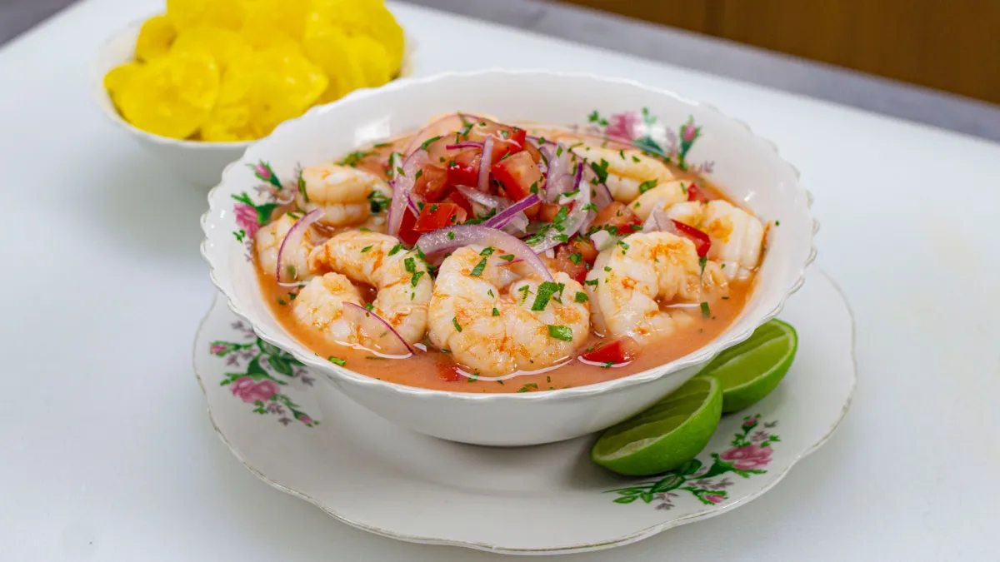

Ceviche de Camaron Recipe

Ingredients
- 1 lb (450 g) medium shrimp, peeled and deveined
- 1 red onion, finely chopped
- 4 tomatoes, diced
- 1 bunch cilantro, chopped
- 2-3 jalapeno peppers, seeded and diced
- 1 cup lime juice
- Salt and pepper to taste
Instructions
- Bring a pot of salted water to a boil. Add shrimp and cook until they turn pink, about 2-3 minutes. Drain and cool.
- In a large bowl, combine shrimp, red onion, tomatoes, cilantro, jalapeno peppers, and lime juice. Mix well.
- Season with salt and pepper to taste. Cover and refrigerate for at least 30 minutes before serving.
- Serve chilled with crackers or tortilla chips.
Go Back